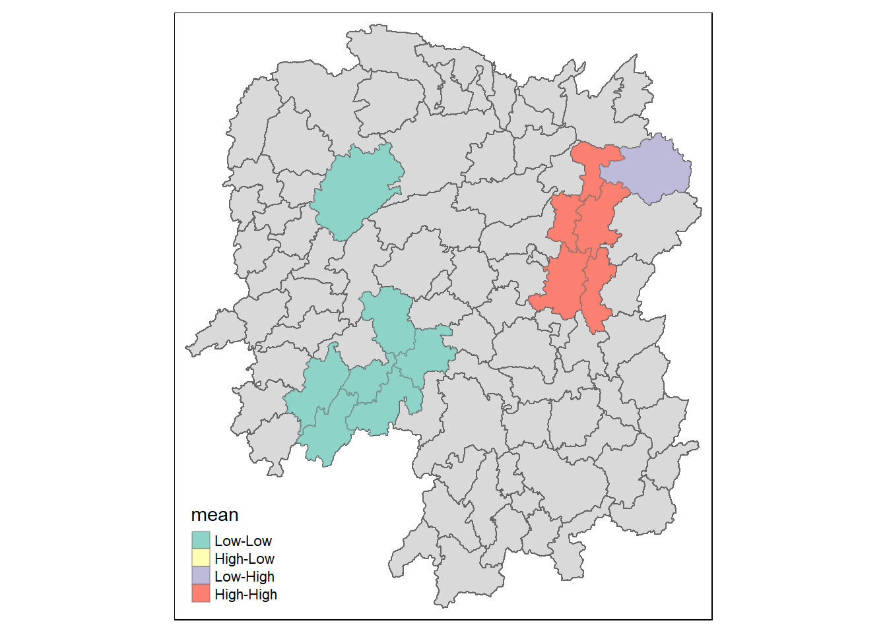
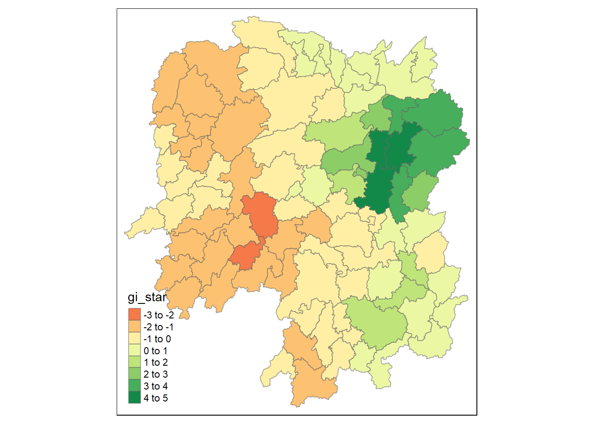

pacman::p_load(sf, tmap, sfdep, tidyverse)In-Class Exercise 7: Global and Local Measures of Spatial Association + Emerging Hot Spot Analysis (sfdep methods)
1 Setup
1.1 Installing and Loading R Packages
1.2 The Data
| Type | Name | Format | Description |
|---|---|---|---|
| Geospatial | Hunan Province Administrative Boundary | .shp | Data is at the County level. |
| Aspatial | Hunan_2012 | .xlsx | Selected Hunan’s local development indicators in 2012. |
1.3 Importing Geospatial Data
hunan <- st_read(dsn = "data/geospatial",
layer = "Hunan")Reading layer `Hunan' from data source
`C:\guga-nesh\IS415-GAA\in-class_ex\in-class_ex07\data\geospatial'
using driver `ESRI Shapefile'
Simple feature collection with 88 features and 7 fields
Geometry type: POLYGON
Dimension: XY
Bounding box: xmin: 108.7831 ymin: 24.6342 xmax: 114.2544 ymax: 30.12812
Geodetic CRS: WGS 84st_read() of sf package is used to import shapefile into R as a simple features object. Please refer to the documentation here.
1.4 Importing Aspatial Data
hunan2012 <- read_csv("data/aspatial/Hunan_2012.csv")2 Data Wrangling
2.1 Performing relational join
hunan <- left_join(hunan,hunan2012) %>%
select(1:4, 7, 15)
# auto takes the columns that exist in both objects
Note
The above code chunk will be used to update the attribute table of hunan’s SpatialPolygonsDataFrame with the attribute field of hunan2012 dataframe. This is performed by using left_join() of dplyr package.
3 Part 1: Global and Local Measures of Spatial Association
3.1 Basic ESDA
3.1.1 Visualising Regional Development Indicator
We will prepare a basemap and a choropleth map showing the distribution of GDPPC 2012 by using qtm() of tmap package.
tmap_mode("plot")
tm_shape(hunan)+
tm_fill("GDPPC",
style = "quantile",
palette = "Blues",
title = "GDPPC") +
tm_layout(main.title = "Distribution of GDP per capita by district, Hunan Province",
main.title.position = "center",
main.title.size = 0.8,
legend.height = 0.35,
legend.width = 0.25,
frame = TRUE) +
tm_borders(alpha = 0.5) +
tm_compass(type="8star", size = 1) +
tm_scale_bar() +
tm_grid(alpha =0.2)
# remember tm_fill and tm_borders will give you the tm_polygon, we do it like this to have a higher level of control on the visuals
# always output the map first to see where you can place the map components like scale bar, compass, etc.
# Classification Method: if you are designing for a regional economic study then you might want to use "equal interval" classification method. It depends on the purpose of our study.3.2 Global Spatial Autocorrelation
In this section, we will compute the global spatial autocorrelation statistics and to perform spatial complete randomness test for global spatial autocorrelation.
3.2.1 Computing Contiguity Spatial Weights
Before we can compute the global spatial autocorrelation statistics, we need to construct the spatial weights of the study area (to define the neighbourhood relationships between the counties in the study area).
3.2.1.1 Deriving contiguity weights: Queen’s method
We will compute the contiguity weights by using st_weights() of sfdep package.
In the code chunk below, queen method is used to derive the contiguity weights.
cw_queen <- hunan %>%
mutate(nb = st_contiguity(geometry),
wt = st_weights(nb,
style="W"),
.before = 1)Note that st_weights() provides 3 arguments:
nb: A neighbour list object created by
st_contiguity()style: Default “W” for row standardized weights (sum over all links to n). Other options include “B”, “C”, “U”, “minmax”, “S”.
B is the basic binary coding,
C is globally standardised (sums over all links to n),
U is equal to C / number of neighbours (sum over all links to unity),
while S is the variance-stabilizing coding scheme proposed by Tiefelsdorf et al. 1999, p. 167-168 (sums over all links to n).
allow_zero: if
TRUE, assigns zero as lagged value to zone without neighbours.
Note
Take note that nb and weight matrix are stored as a list. If you want to use them (we’ll do this later) you need to use unlist()
3.2.2 Computing Global Moran’s I
moranI <- global_moran(cw_queen$GDPPC,
cw_queen$nb,
cw_queen$wt)
Note
moranI is a tibble dataframe with two values. Normally, we don’t compute the Global Moran’s I we just perform the Global Moran’s I test (since it includes test result and test statistic). See below code chunk.
3.2.3 Performing Global Moran’s I test
global_moran_test(cw_queen$GDPPC,
cw_queen$nb,
cw_queen$wt)
Moran I test under randomisation
data: x
weights: listw
Moran I statistic standard deviate = 4.7351, p-value = 1.095e-06
alternative hypothesis: greater
sample estimates:
Moran I statistic Expectation Variance
0.300749970 -0.011494253 0.004348351
Note
The global Moran’s I test gives us the p-value allows you to know if you have enough statistical evidence to reject the null hypothesis or not. In this case, we have 0.000001095 which is < alpha value of 0.05. Hence, we have sufficient statistical evidence to reject the null hypothesis that the observed GDPPC is spatially independent.
In fact, the Moran’s I statistic is positive which shows us that there is positive autocorrelation (i..e., clustering)…
3.2.4 Performing Global Moran’s I permutation test
# this is done to ensure the code is reproducible - if involves simulations, please do this.
set.seed(1234)
global_moran_perm(cw_queen$GDPPC,
cw_queen$nb,
cw_queen$wt,
nsim = 99)
Monte-Carlo simulation of Moran I
data: x
weights: listw
number of simulations + 1: 100
statistic = 0.30075, observed rank = 100, p-value < 2.2e-16
alternative hypothesis: two.sided# in this case, we are running 100 simulations
Note
We can see that the significance level changes (p-value is smaller)
3.2.5 Computing local Moran’s I
lisa <- cw_queen %>%
mutate(local_moran = local_moran(
GDPPC, nb, wt, nsim = 99),
.before = 1) %>%
unnest(local_moran)
lisaSimple feature collection with 88 features and 20 fields
Geometry type: POLYGON
Dimension: XY
Bounding box: xmin: 108.7831 ymin: 24.6342 xmax: 114.2544 ymax: 30.12812
Geodetic CRS: WGS 84
# A tibble: 88 × 21
ii eii var_ii z_ii p_ii p_ii_…¹ p_fol…² skewn…³ kurtosis
<dbl> <dbl> <dbl> <dbl> <dbl> <dbl> <dbl> <dbl> <dbl>
1 -0.00147 0.00177 4.18e-4 -0.158 0.874 0.82 0.41 -0.812 0.652
2 0.0259 0.00641 1.05e-2 0.190 0.849 0.96 0.48 -1.09 1.89
3 -0.0120 -0.0374 1.02e-1 0.0796 0.937 0.76 0.38 0.824 0.0461
4 0.00102 -0.0000349 4.37e-6 0.506 0.613 0.64 0.32 1.04 1.61
5 0.0148 -0.00340 1.65e-3 0.449 0.654 0.5 0.25 1.64 3.96
6 -0.0388 -0.00339 5.45e-3 -0.480 0.631 0.82 0.41 0.614 -0.264
7 3.37 -0.198 1.41e+0 3.00 0.00266 0.08 0.04 1.46 2.74
8 1.56 -0.265 8.04e-1 2.04 0.0417 0.08 0.04 0.459 -0.519
9 4.42 0.0450 1.79e+0 3.27 0.00108 0.02 0.01 0.746 -0.00582
10 -0.399 -0.0505 8.59e-2 -1.19 0.234 0.28 0.14 -0.685 0.134
# … with 78 more rows, 12 more variables: mean <fct>, median <fct>,
# pysal <fct>, nb <nb>, wt <list>, NAME_2 <chr>, ID_3 <int>, NAME_3 <chr>,
# ENGTYPE_3 <chr>, County <chr>, GDPPC <dbl>, geometry <POLYGON [°]>, and
# abbreviated variable names ¹p_ii_sim, ²p_folded_sim, ³skewness
Note
Here are what the different columns mean:
ii - Moran’s I value
e_ii - Expected value of Moran’s I
var_ii - Variance of Moran’s I
z_ii - Standardisation of Moran’s I
p_ii - Moran’s I derived after simulation
Btw, for Take-Home please use mean of lisa. The reasoning will be that it follows a somewhat Normal Distribution.
3.2.6 Visualising local Moran’s I
tmap_mode("plot")
tm_shape(lisa) +
tm_fill("ii") +
tm_borders(alpha = 0.5) +
tm_view(set.zoom.limits = c(6,8))
Note
+ve values = positive autocorrelation
-ve values = negative autocorrelation
3.2.7 Visualising p-value of Moran’s I
tmap_mode("plot")
tm_shape(lisa) +
tm_fill("p_ii_sim") +
tm_borders(alpha = 0.5) +
tm_view(set.zoom.limits = c(6,8))
Note
Use p_ii_sim to be more accurate. You always want to use the one that has several trials.
3.2.8 Visualising local Moran’s I
lisa_sig <- lisa %>%
filter(p_ii_sim < 0.05)
tmap_mode("plot")
tm_shape(lisa) +
tm_polygons() +
tm_borders(alpha = 0.5) +
tm_shape(lisa_sig) +
tm_fill("mean") +
tm_borders(alpha = 0.4)
Note
Prof. Kam has mentioned that this way to do it is quite messy... We should use the hands-on method where we have both together (and not separate layers) and have a legend for insignificant counties as well.
3.3 Hot Spot and Cold Spot Area Analysis
3.3.1 Computing local Moran’s I
HCSA <- cw_queen %>%
mutate(local_Gi = local_gstar_perm(
GDPPC, nb, wt, nsim = 99),
.before = 1) %>%
unnest(local_Gi)
HCSASimple feature collection with 88 features and 16 fields
Geometry type: POLYGON
Dimension: XY
Bounding box: xmin: 108.7831 ymin: 24.6342 xmax: 114.2544 ymax: 30.12812
Geodetic CRS: WGS 84
# A tibble: 88 × 17
gi_star e_gi var_gi p_value p_sim p_fol…¹ skewn…² kurto…³ nb wt
<dbl> <dbl> <dbl> <dbl> <dbl> <dbl> <dbl> <dbl> <nb> <lis>
1 0.0416 0.0114 0.00000641 0.0493 9.61e-1 0.7 0.35 0.875 <int> <dbl>
2 -0.333 0.0106 0.00000384 -0.0941 9.25e-1 1 0.5 0.661 <int> <dbl>
3 0.281 0.0126 0.00000751 -0.151 8.80e-1 0.9 0.45 0.640 <int> <dbl>
4 0.411 0.0118 0.00000922 0.264 7.92e-1 0.6 0.3 0.853 <int> <dbl>
5 0.387 0.0115 0.00000956 0.339 7.34e-1 0.62 0.31 1.07 <int> <dbl>
6 -0.368 0.0118 0.00000591 -0.583 5.60e-1 0.72 0.36 0.594 <int> <dbl>
7 3.56 0.0151 0.00000731 2.61 9.01e-3 0.06 0.03 1.09 <int> <dbl>
8 2.52 0.0136 0.00000614 1.49 1.35e-1 0.2 0.1 1.12 <int> <dbl>
9 4.56 0.0144 0.00000584 3.53 4.17e-4 0.04 0.02 1.23 <int> <dbl>
10 1.16 0.0104 0.00000370 1.82 6.86e-2 0.12 0.06 0.416 <int> <dbl>
# … with 78 more rows, 7 more variables: NAME_2 <chr>, ID_3 <int>,
# NAME_3 <chr>, ENGTYPE_3 <chr>, County <chr>, GDPPC <dbl>,
# geometry <POLYGON [°]>, and abbreviated variable names ¹p_folded_sim,
# ²skewness, ³kurtosis
Note
In general we use G* and not G. Furthermore, in this case, we use the local_gstar_perm() version.
3.3.2 Visualising Gi*
tmap_mode("plot")
tm_shape(HCSA) +
tm_fill("gi_star") +
tm_borders(alpha = 0.5) +
tm_view(set.zoom.limits = c(6,8))
3.3.3 Visualising p-value of HCSA
tmap_mode("plot")
tm_shape(HCSA) +
tm_fill("p_sim") +
tm_borders(alpha = 0.5)
Note
Most of this are greater than 0.05. We should make some changes to only see the ones that have statistical significance.
4 Part 2: Emerging Hot Spot Analysis
pacman::p_load(sf, sfdep, tmap, plotly, zoo)GDPPC <- read_csv("data/aspatial/Hunan_GDPPC.csv")
hunan <- st_read(dsn = "data/geospatial",
layer = "Hunan")Reading layer `Hunan' from data source
`C:\guga-nesh\IS415-GAA\in-class_ex\in-class_ex07\data\geospatial'
using driver `ESRI Shapefile'
Simple feature collection with 88 features and 7 fields
Geometry type: POLYGON
Dimension: XY
Bounding box: xmin: 108.7831 ymin: 24.6342 xmax: 114.2544 ymax: 30.12812
Geodetic CRS: WGS 84# to get structure that includes spatial entities
GDPPC_st <- spacetime(GDPPC, hunan,
.loc_col = "County",
.time_col = "Year")GDPPC_nb <- GDPPC_st %>%
activate("geometry") %>%
mutate(
nb = include_self(st_contiguity(geometry)),
wt = st_weights(nb)
) %>%
set_nbs("nb") %>%
set_wts("wt")4.0.1 Computing Gi *
gi_stars <- GDPPC_nb %>%
group_by(Year) %>%
mutate(gi_star = local_gstar_perm(
GDPPC, nb, wt, nsim = 99)) %>%
tidyr::unnest(gi_star)4.0.2 Mann-Kendall Test
cbg <- gi_stars %>%
ungroup() %>%
filter(County == "Changsha") |> # you can use any county
select(County, Year, gi_star)ggplot()